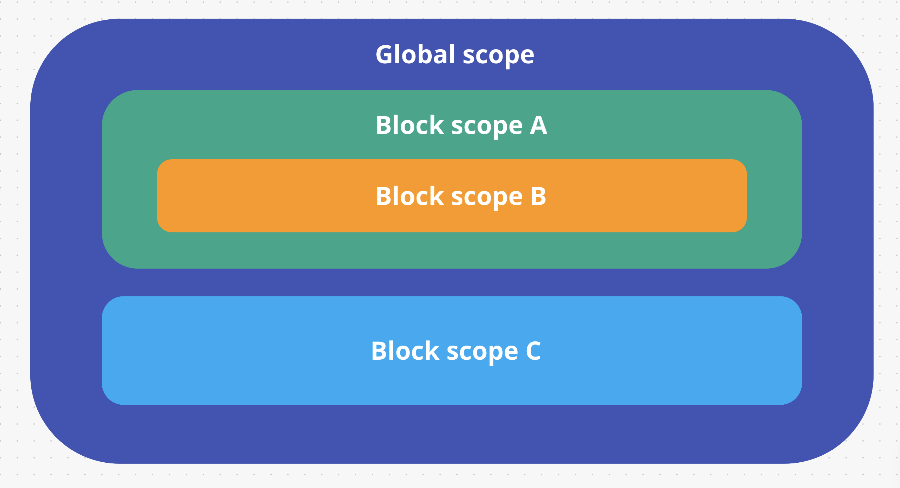

Область видимости переменных (variable scope) - доступность переменных в определённом месте кода.
Глобальная область видимости используется по умолчанию. Все и вся имеют доступ к переменным объявленным в ней. Например, переменная value объявлена в глобальной области видимости, то есть вне какого-то блока, и доступна в любом месте после объявления.
const value = 5;
Любая конструкция использующая фигурные скобки {} (условия, циклы, функции и т. п.) создает новую локальную область видимости, и переменные, объявленные в этой области видимости, используя let или const, не доступны вне этого блока.
if (true) {
console.log("Block scope: ", value); // 5
}
console.log("Global scope: ", value); // 5
if (true) {
Глубина вложенности областей видимости не ограничена, и все они буду работать по одному принципу - область видимости имеет доступ ко всем переменным объявленным выше по иерархии вложенности, но не может получить доступ к переменным объявленным во вложенных областях видимости.
const value = 5;
console.log("Block scope: ", value); // 5
}
console.log("Global scope: ", value); // ReferenceError: value is not defined
Создадим несколько областей видимости и дадим им имена для наглядности.

const global = "global";
if (true) {
const blockA = "block A";
// Видим глобальную + локальную A
console.log(global); // 'global'
console.log(blockA); // block A
// Переменные blockB и blockC не найдены в доступных областях видимости.
// Будет ошибка обращения к переменной.
console.log(blockB); // ReferenceError: blockB is not defined
console.log(blockC); // ReferenceError: blockC is not defined
if (true) {
const blockB = "block B";
// Видим глобальную + внешнюю A + локальную B
console.log(global); // global
console.log(blockA); // block A
console.log(blockB); // block B
// Переменная blockC не найдена в доступных областях видимости.
// Будет ошибка обращения к переменной.
console.log(blockC); // ReferenceError: blockC is not defined
}
}
if (true) {
const blockC = "block C";
// Видим глобальную + локальную C
console.log(global); // global
console.log(blockC); // block C
// Переменные blockA и blockB не найдены в доступных областях видимости.
// Будет ошибка обращения к переменной.
console.log(blockA); // ReferenceError: blockA is not defined
console.log(blockB); // ReferenceError: blockB is not defined
}
// Видим только глобальную
console.log(global); // global
// Переменные blockA, blockB и blockC не найдены в доступных областях видимости.
// Будет ошибка обращения к переменной.
console.log(blockA); // ReferenceError: blockA is not defined
console.log(blockB); // ReferenceError: blockB is not defined
console.log(blockC); // ReferenceError: blockC is not defined